Render / fotografía
Próximo ejercicio
Sustituye este bloque por el siguiente encargo. En modo edición, haz clic en el marco para cargar el render.
- Lugar
- —
- Área
- — m²
- Sistema
- —
- Montaje
- —
Lo que se monta para durar poco. Este repositorio reúne el stand comercial RUTAS, el habitáculo en guadua, el marco normativo de la vivienda en emergencia, la propuesta completa de vivienda modular —esquemas, modelo y renders— con sus referentes teóricos, y la bitácora del curso.
Espacios que se construyen para vender y se desarman cuando termina el evento. El encargo del semestre: un stand para un centro de convenciones, donde la competencia por la atención es el verdadero problema de proyecto.
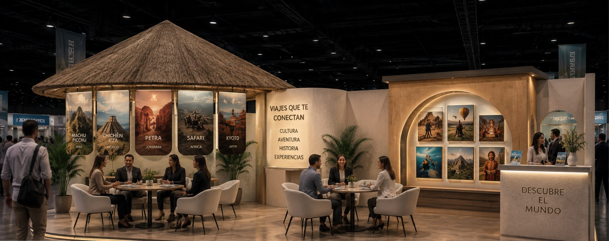
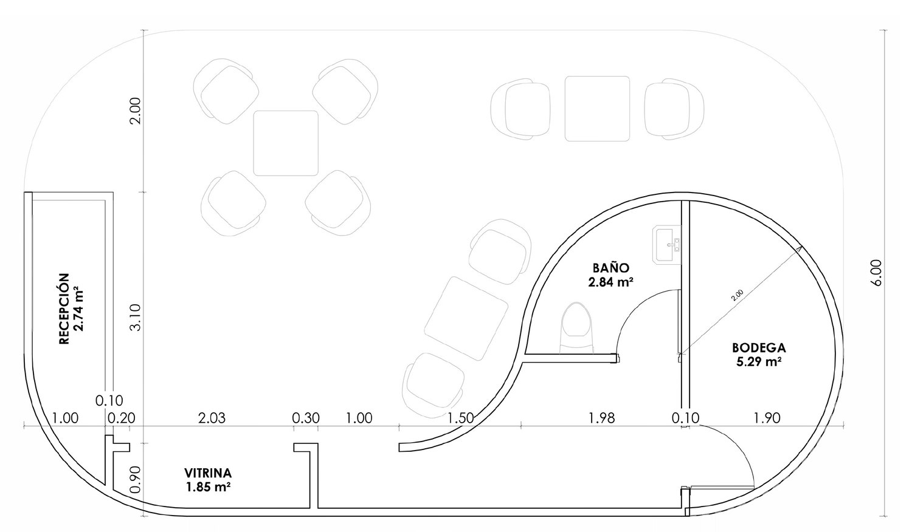
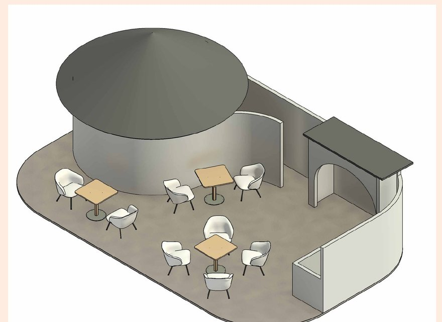
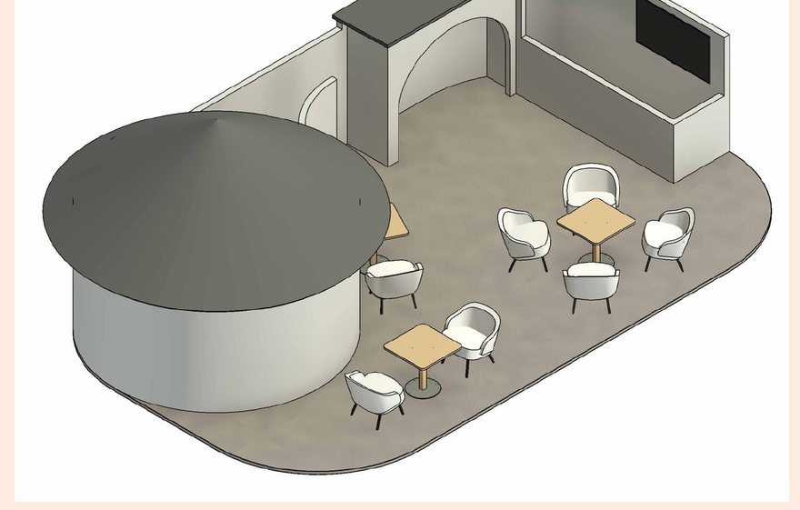
El usuario objetivo valora la posibilidad de explorar nuevos territorios y vivir experiencias significativas, por lo que busca destinos como Machu Picchu, Chichén Itzá, Petra o rutas de naturaleza y aventura. La propuesta está dirigida a personas que priorizan la experiencia cultural, la autenticidad y el descubrimiento por encima de un turismo convencional.
La cubierta de paja es el elemento visual más reconocible del stand. Su geometría, textura y materialidad buscan generar una asociación inmediata con destinos exóticos, naturaleza, cultura y experiencias de viaje, funcionando como un elemento de atracción dentro del entorno altamente competitivo de un centro de convenciones.
La cubierta atrae al visitante desde el exterior; los paneles despiertan su curiosidad por los destinos; las mesas permiten la interacción con los asesores; y la vitrina ubicada en el arco presenta las diferentes actividades y experiencias que pueden ser cotizadas.
| № | Espacio | Función | Área |
|---|---|---|---|
| 01 | Recepción | Mostrador de atención y primer punto de información del visitante. | 2,74 m² |
| 02 | Vitrina | Exhibición de actividades y experiencias cotizables, alojada en el arco. | 1,85 m² |
| 03 | Baño | Servicio interno para el personal del stand durante la feria. | 2,84 m² |
| 04 | Bodega | Almacenaje de material promocional y de las piezas del montaje. | 5,29 m² |
| 05 | Salón de mesas | Cuatro mesas bajo la cubierta para la conversación con los asesores. | Área libre |
| 06 | Cubierta | Gag visual: geometría y textura de paja como reclamo a distancia dentro del pabellón. | Paja |
| 07 | Huella | Perímetro de la plataforma ocupada sobre el suelo del pabellón ferial. | 10,10 × 6,00 m |
Sustituye este bloque por el siguiente encargo. En modo edición, haz clic en el marco para cargar el render.
Sustituye este bloque por el siguiente encargo. En modo edición, haz clic en el marco para cargar el render.
Naturaleza, espacio y estructura. Un pequeño habitáculo para el descanso y la contemplación, donde la guadua, la piedra y el metal se unen para crear un espacio ligero, resistente y en armonía con el entorno. Pensado como punto de encuentro, lectura y pausa en zonas rurales, fincas, parques o miradores.
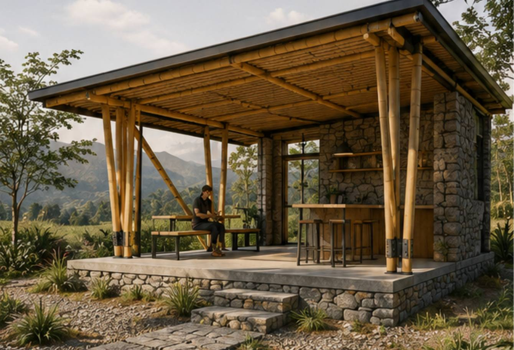
Soporta la estructura y define el carácter del espacio. Se trabaja en haces de cañas de 10 cm de diámetro, visibles desde el interior y rematadas en cielo raso del mismo material.
Cierra el costado macizo y levanta la plataforma sobre el terreno. Piedra natural tipo loja sobre una estructura metálica oculta, anclada a piso.
Resuelve lo que la guadua no puede resolver sola: las uniones. Platinas con pernos abrazan las cañas y una base metálica las transfiere al dado de concreto.
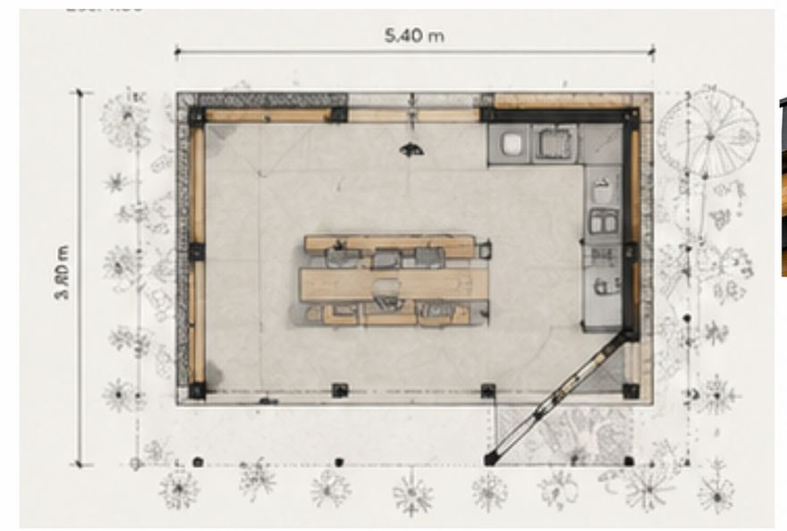
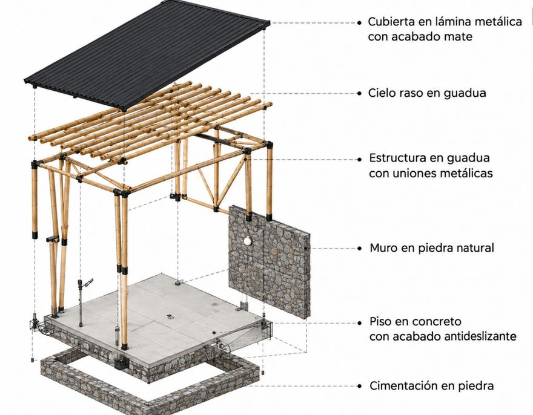
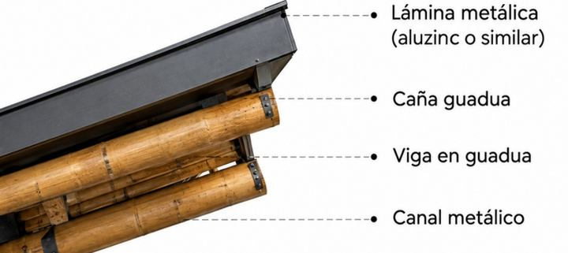
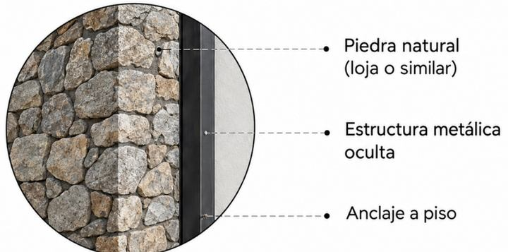
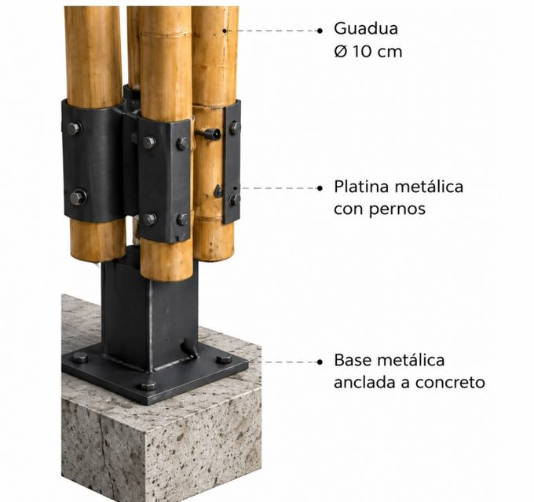
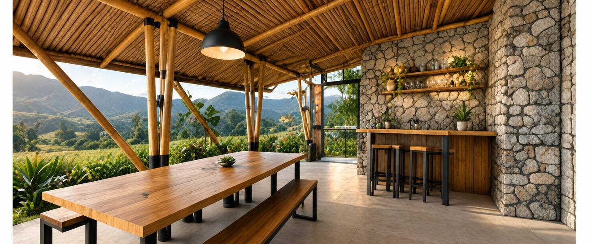
Este ejercicio es el banco de pruebas material de la propuesta de las láminas A-03 y A-04. Aquí se resuelve, a escala de un recinto pequeño, lo que la vivienda de emergencia necesita: una estructura ligera de material local, una unión metálica que la hace montable y desmontable, un apoyo puntual que no exige cimentación corrida y una cubierta independiente del soporte.
Lectura del manual de la UNGRD desde la asignatura: qué exige la norma colombiana para formular vivienda después de una declaratoria de desastre o calamidad pública, y dónde queda el espacio de lo efímero dentro de ese proceso.
El manual está dirigido a alcaldías y gobernaciones. Fija los lineamientos jurídicos, técnicos y financieros para formular vivienda nueva —de interés social o prioritario, urbana o rural— cuando un municipio ha declarado desastre o calamidad pública.
La competencia se reparte por suelo: el Ministerio de Vivienda con Fonvivienda atiende lo urbano y el Ministerio de Agricultura con el Banco Agrario lo rural. Si ninguno puede responder, el FNGRD financia en todo o en parte, sujeto a disponibilidad.
Hay que estar en el censo del CMGRD, habitar la vivienda de forma permanente como propietario o poseedor y transferir el predio desalojado al municipio; su avalúo catastral cuenta como aporte a la vivienda nueva.
| № | Variable | Exigencia | Referencia |
|---|---|---|---|
| 01 | Programa mínimo | Sala-comedor en espacio múltiple, cocina con mesón y lavaplatos, lavadero, baño con sanitario, lavamanos y ducha, y mínimo dos alcobas. El diseño debe permitir crecimiento posterior. | Cap. III, 1.2.2 |
| 02 | Prototipo urbano | Vivienda de 6,00 × 7,00 m: 42 m² construidos con dos alcobas, baño, sala, comedor, cocina, patio de ropas y terraza de acceso; aparte, un patio posterior de 3,00 m (18 m²). | Anexo 4 |
| 03 | Prototipo rural | Dos alternativas: 42 m² con dos alcobas, o 52 m² con tres bajo parámetros del Banco Agrario. Cocina, comedor y baño con relación directa al exterior. | Anexo 4 |
| 04 | Ventana-muro | No debe superar el 40 %, calculado como área de vidriado sobre área bruta de muro exterior. | Medida pasiva i |
| 05 | Altura libre | Mínimo 2,30 m en clima cálido y 2,20 m en clima frío. Todos los espacios con iluminación y ventilación naturales. | Medidas pasivas iii–iv |
| 06 | Orientación | En clima frío se alarga la edificación sobre el eje este-oeste para captar sol; en clima templado y cálido las fachadas largas van al norte y al sur. | Medida pasiva ii |
| 07 | Estructura | Diseño sismorresistente según NSR-10. Los sistemas no tradicionales se acogen al capítulo de materiales y métodos alternos de la Ley 400 de 1997. | NSR-10 / Ley 400 |
| 08 | Redes | Hidrosanitarias según RAS 2000, eléctricas según RETIE, telecomunicaciones según NTC-5797 y una salida de gas para estufa con medidor y regulador. | RAS / RETIE / NTC |
| 09 | Accesibilidad | El proyecto debe garantizar el acceso de personas con movilidad reducida y cumplir las disposiciones de espacio público del municipio. | Ley 361 / Dec. 1538 |
| 10 | Predio | Escritura registrada, certificado de tradición y libertad de menos de 30 días hábiles y avalúo comercial. Nunca en suelo de protección ni en alto riesgo no mitigable. | Cap. III, 1.2.1 |
El manual regula vivienda permanente: reasentamiento definitivo con licencia, escritura y redes conectadas. Entre el día del evento y la entrega de esa vivienda pasan meses o años, y ese intervalo no lo cubre la norma. Ahí trabaja la arquitectura efímera: alojamiento temporal, equipamiento de atención y estructuras de transición que deben resolverse con los mismos criterios de habitabilidad —altura libre, ventilación cruzada, orientación, privacidad— pero con montaje en días y desmontaje sin huella.
La lámina siguiente responde con una propuesta completa: el puente autoportante de Da Vinci convertido en estructura base de una vivienda modular de guadua, que la comunidad levanta en pocos días y retira sin huella.
Vivienda transitoria y progresiva para un hogar de cinco personas en zona rural andina de clima cálido. La estructura base es el puente autoportante de Leonardo: pórticos de guadua cada 2,40 m, trabados en nudos recíprocos y sin uniones rígidas, con piel de lona tensada y testeros de esterilla. Crece por vanos, de refugio de 28,8 m² a vivienda de 57,6 m².
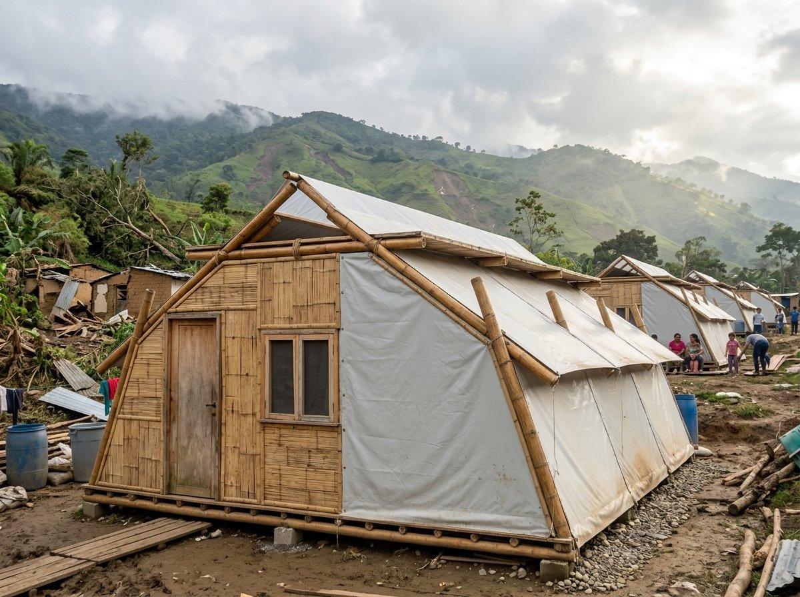
Entre el evento y la vivienda definitiva pasan meses o años que la norma no cubre (lámina A-03). Para ese intervalo se propone una vivienda transitoria y progresiva: un hogar de cinco personas, zona rural andina de clima cálido y guadua disponible en la región. No es carpa ni casa definitiva: es un tramo de estructura que se habita desde el primer vano y crece con la familia.
Del puente de Leonardo se toma la lógica, no la forma: piezas rectas que se traban unas con otras sin uniones rígidas. Cada pórtico tiene dos muros a 70° y dos cubiertas a 30°; en el quiebre la correa queda presa entre cubierta y muro, y en la cumbrera las cubiertas se cruzan en tijera. De cada guadua de 6 m salen un muro y una cubierta, siempre iguales.
La cubierta es una membrana: paños de lona de PVC tensados por vano, como las cubiertas textiles de los grandes recintos, pero con un material de emergencia que se dobla y se transporta. La piel vuela sobre el muro y deja una ranura de ventilación protegida; la cumbrera ventilada saca el aire caliente. Donde hay puertas y ventanas, el muro es de esterilla de guadua.
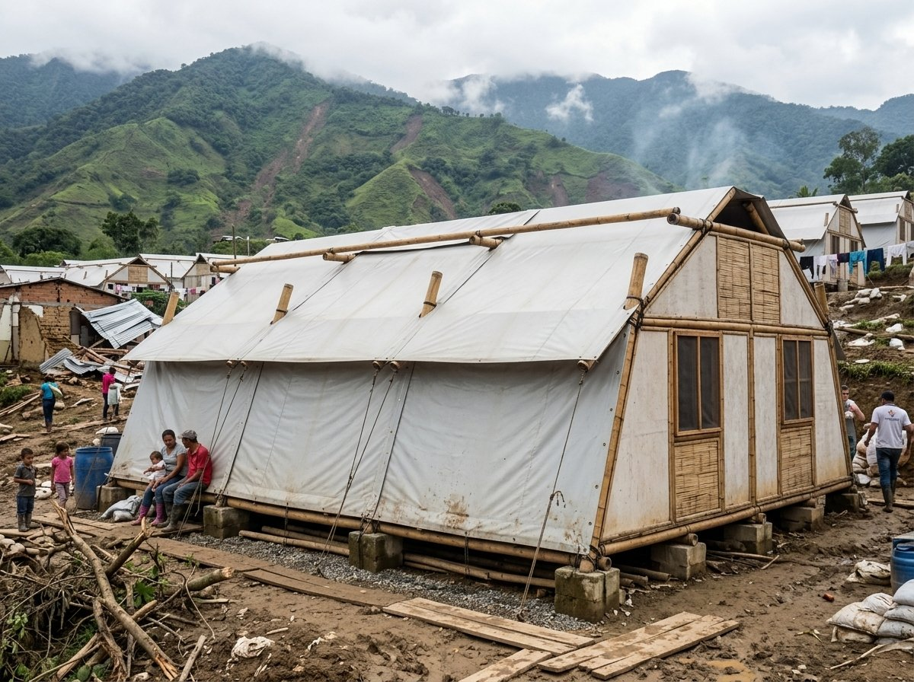
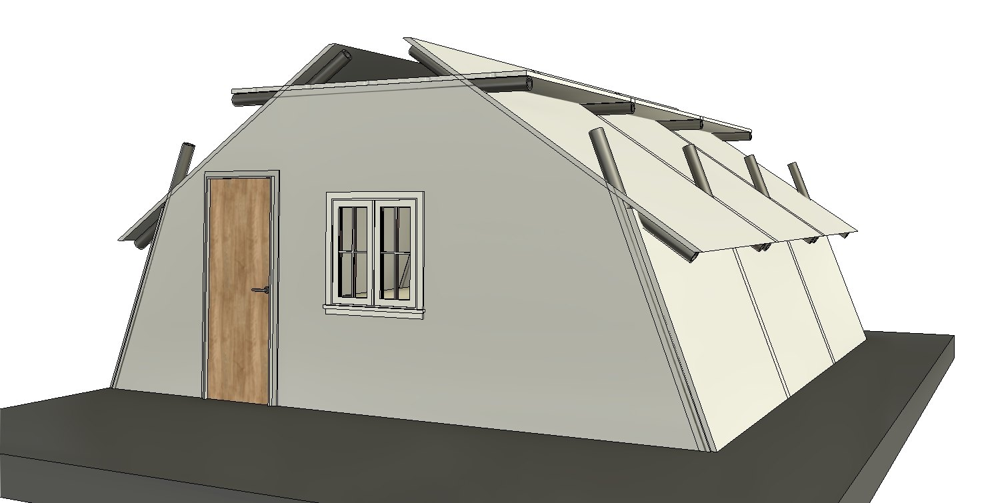
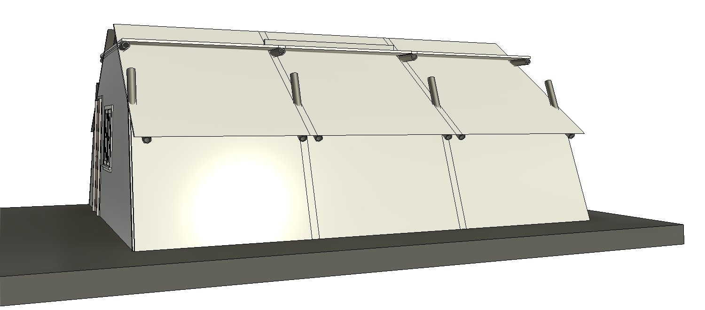
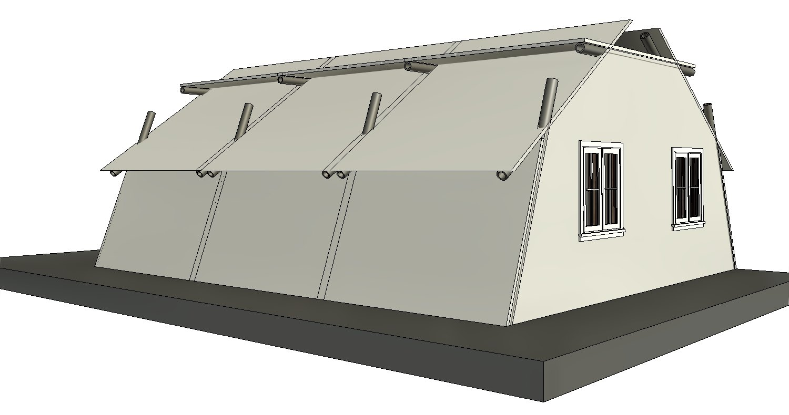
Cinco láminas de diagnóstico y diseño, dibujadas sobre la grilla y el perfil del modelo. Haz clic en cualquiera para abrirla a resolución completa.
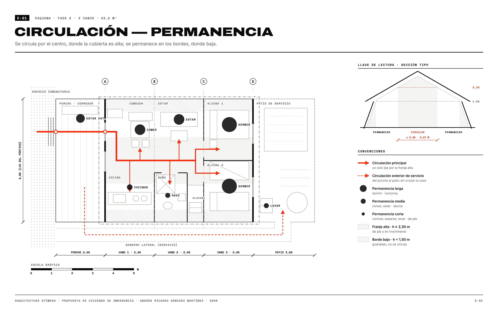
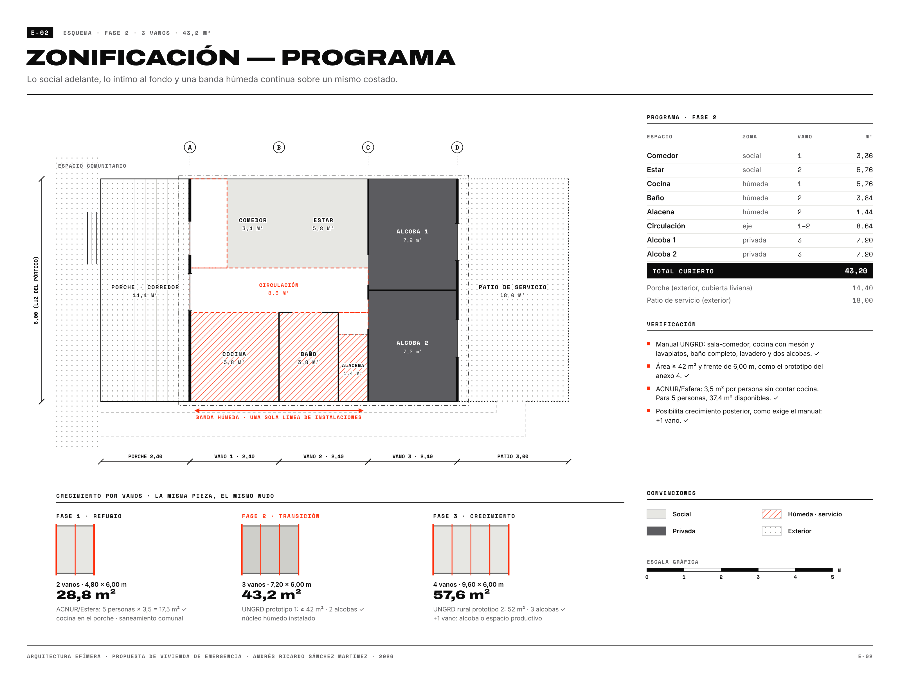
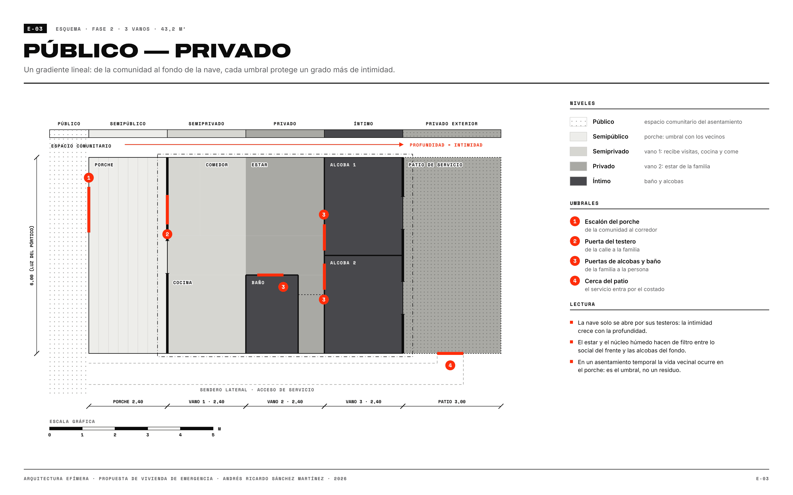
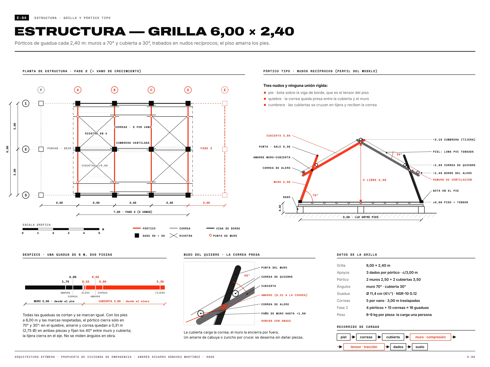
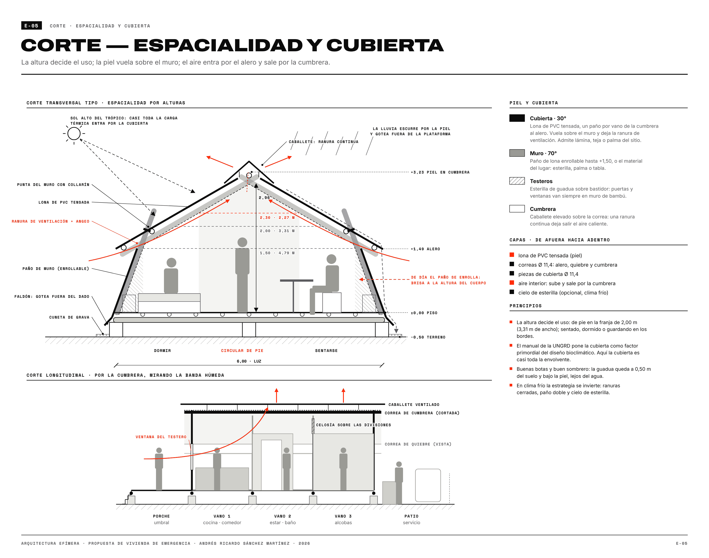
| № | Operación | En qué consiste | Nota |
|---|---|---|---|
| 01 | Replanteo | Estacas y cuerda: grilla de 6,00 × 2,40 m y dados de 30 × 30 cm cada 3,00 m. | Cuerda y nivel |
| 02 | Plataforma | Vigas de guadua sobre los dados, tensores en cada eje de pórtico, viguetas cada 0,60 m y piso a +0,50 m. | +0,50 |
| 03 | Marcado | Todas las guaduas se cortan en 2,50 + 3,50 m y se marcan con la misma plantilla: amarre, correa y tijera. | Plantilla |
| 04 | Pórtico | Se arma en el piso: cubiertas cruzadas en tijera, correa de quiebre presa entre cubierta y muro, un amarre en cada cruce. | Clave |
| 05 | Izado | El pórtico se levanta a mano y los pies calzan en las botas de la viga de borde, que trabaja como tensor. | 4 personas |
| 06 | Correas | Cumbrera, quiebre y alero: piezas de 3,00 m traslapadas 0,30 m sobre cada pórtico; riostras en X en los vanos extremos. | Por vano |
| 07 | Piel | Paños de lona por vano, de la cumbrera al alero; paños de muro enrollables; caballete ventilado sobre la cumbrera. | Tensado |
| 08 | Testeros | Bastidor de guadua con esterilla: puertas y ventanas siempre en muro de bambú. | Esterilla |
| 09 | Desmontaje | Orden inverso. Las piezas salen enteras y vuelven a servir en otro montaje o en la vivienda definitiva. | Reversible |
| № | Criterio | Propuesta | Estado |
|---|---|---|---|
| 01 | Programa mínimo · UNGRD | Sala-comedor, cocina con mesón y lavaplatos, baño completo, lavadero en el patio y dos alcobas. Crecimiento posterior por vanos. | Cumple |
| 02 | Área · UNGRD, prototipo de 42 m² | 43,2 m² en la fase 2 y 57,6 m² en la fase 3, por encima de los 52 m² del prototipo rural de tres alcobas. | Cumple |
| 03 | Área por persona · ACNUR / Esfera | 3,5 m² × 5 personas = 17,5 m². La fase 1 ya ofrece 28,8 m², de los cuales 23,0 m² tienen más de 1,50 m de altura. | Cumple |
| 04 | Altura libre · UNGRD, 2,30 m en clima cálido | 2,30 m en la franja central de 2,27 m, donde se circula y se está de pie; 2,96 m en la cumbrera. Los bordes bajos alojan camas, bancas y guardado. | Parcial |
| 05 | Altura · ACNUR, 2 m en el punto más bajo | 2,00 m en una franja de 3,31 m. Como en la carpa familiar de ACNUR —1,80 m en los costados y 2,75 m al centro—, los lados quedan más bajos que el eje. | Parcial |
| 06 | Relación ventana-muro ≤ 40 % · UNGRD | Testero de acceso: puerta y una ventana (≈ 8 % de vidrio). Testero posterior: dos ventanas (≈ 16 %). | Cumple |
| 07 | Iluminación y ventilación naturales · UNGRD | Ranura continua en ambos aleros, cumbrera ventilada, ventanas en los testeros y paños de muro enrollables. | Cumple |
| 08 | Estructura · NSR-10, Título G (cap. G.12) | Guadua angustifolia preservada y seca (NTC 5301), un piso. Las uniones por amarre requieren cálculo y ensayo antes de construir. | Por verificar |
| 09 | Protección del material | Guadua a 0,50 m del suelo sobre dados, siempre bajo la piel; el faldón de la lona gotea fuera del dado, sobre una cuneta de grava. | Cumple |
La maqueta en balso comprobó el principio: piezas rectas que se sostienen trabándose unas con otras, sin clavos ni pegante. En escala real, con guadua, lluvia y viento, el pórtico se simplifica a cuatro piezas y tres tipos de nudo, y cada cruce lleva un amarre que se desarma sin dañar la pieza.
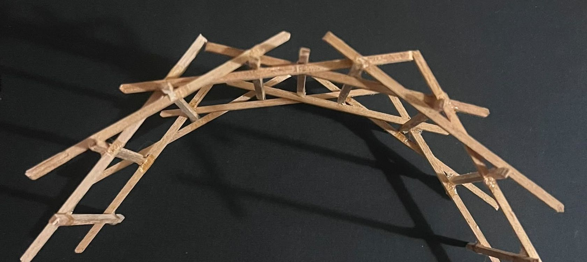
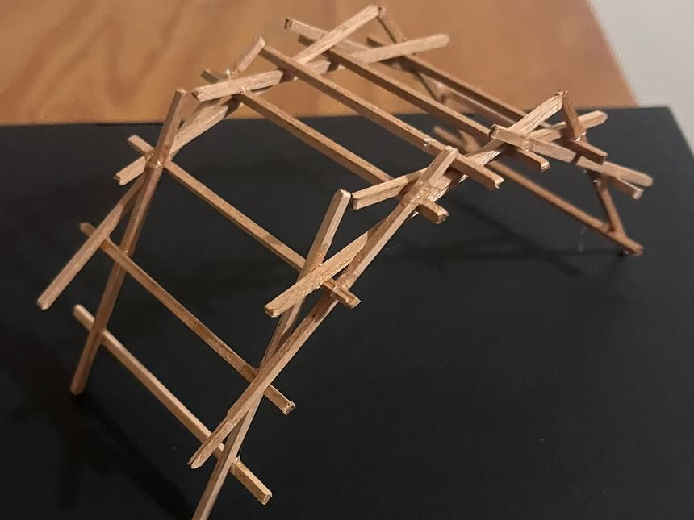
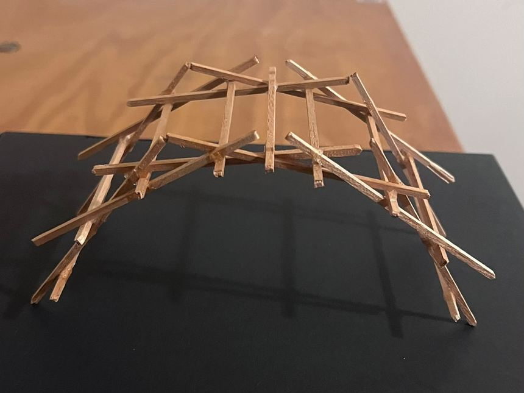
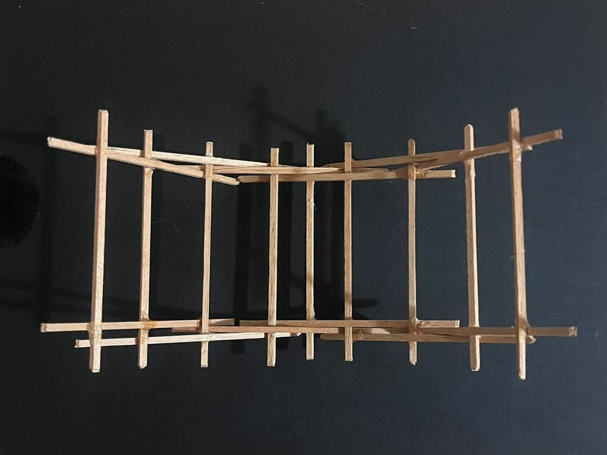
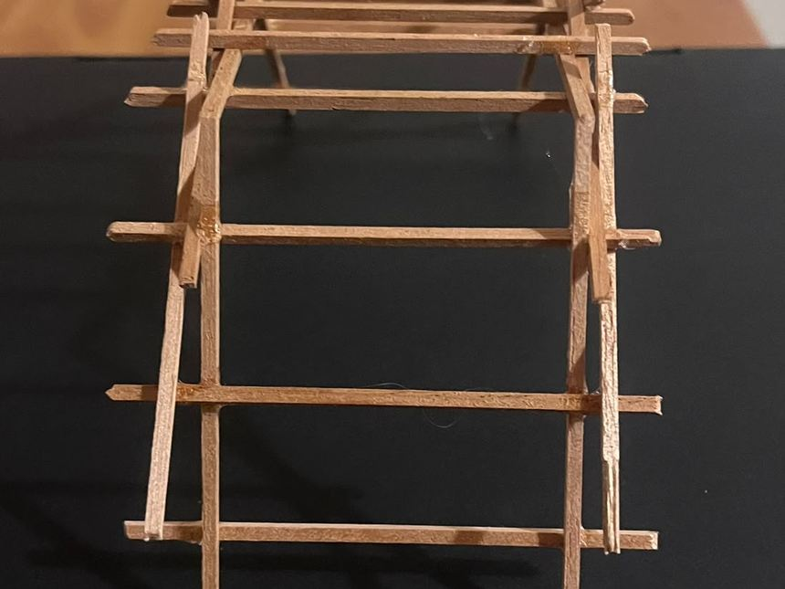
La vivienda cubre el intervalo que deja abierto la lámina A-03: desde el día del evento hasta la entrega de la vivienda definitiva. Se levanta con mano de obra de la comunidad y una sola guadua cortada siempre igual; cumple el área y el programa del manual en su fase 2 y deja explícito lo que falta verificar: la altura en los bordes y el cálculo de las uniones. Cuando llega el reasentamiento, se desmonta sin huella y sus guaduas vuelven a servir. La lámina A-05 reúne los referentes teóricos que sustentan cada decisión.
De dónde viene cada decisión de la vivienda modular de la lámina A-04. Tres frentes: el sistema estructural que se adopta, la doctrina de la vivienda post-desastre que fija qué debe hacer un alojamiento temporal, y la tesis de que quien habita es quien construye.
Piezas rectas iguales que se cruzan y se traban entre sí por fricción y peso propio, sin clavos, cuerdas ni pegante. La estructura se arma en campo con la madera que haya, se sostiene sola y se desarma igual de rápido; cuanta más carga recibe, más se aprietan los encuentros.
Es el principio estructural que adopta el módulo: el puente deja de cruzar, se levanta y se convierte en pórtico habitable.Casas desmontables encargadas por el gobierno francés para los damnificados de la guerra en Lorena y el Franco Condado. Un pórtico axial patentado —no los muros— sostiene la casa; el Ministerio de la Reconstrucción fijó 36 m² por unidad, ampliados después a 54 m², y la vivienda quedaba habitable el mismo día del montaje.
Antecedente directo de resolver una vivienda de emergencia con un solo pórtico repetido, y prueba de que la medida mínima y el montaje en un día son compatibles.Su aporte decisivo no es una forma sino una unión: rellenar con mortero de cemento el entrenudo de la caña justo donde llega la conexión, atravesado por acero. Eso permite trabajar la guadua a tracción —no solo a compresión— y resolver voladizos que antes eran imposibles.
Marco técnico para que una estructura de guadua sea viable en Colombia, y punto de partida de las platinas con pernos del habitáculo de la lámina A-02.El texto fundacional del alojamiento post-desastre. Sostiene que el recurso principal es la iniciativa del propio damnificado: en los desastres estudiados, los materiales locales y de rescate permitieron reconstruir cerca de tres cuartas partes de la vivienda dañada, mientras que los organismos externos aportaron alrededor del 20 % de la respuesta. Advierte que la vivienda prefabricada importada es cara, suele volverse permanente y desplaza esa capacidad.
Justifica que el módulo no se fabrique fuera y se despache armado, sino que se replantee y se levante en el sitio con mano de obra de la comunidad.Fija el mínimo internacional de 3,5 m² de espacio cubierto por persona, alcanzable de forma progresiva y ajustable a la norma de alojamiento de la población afectada. En climas fríos advierte que esa superficie es difícil de calentar cuando escasea el combustible, y que construir con madera puede presionar el bosque local.
Es el piso cuantitativo contra el que se contrasta el prototipo de 42 m² del manual de la UNGRD: la norma colombiana queda holgadamente por encima del mínimo humanitario.Alojamiento para los damnificados del terremoto de Hanshin. Cimiento de cajas de cerveza donadas y rellenas de arena, muros de tubos de cartón de 106 mm de diámetro y 4 mm de espesor sellados entre sí, cubierta de lona. Menos de 2.000 dólares por unidad en materiales, montaje al alcance de casi cualquiera y desmontaje con material reciclable.
Demuestra que lo temporal no está reñido ni con la dignidad ni con el detalle constructivo: el cimiento sin excavación y el montaje sin oficio son la misma estrategia del módulo.A partir de su trabajo en las barriadas de Arequipa y Lima entre 1957 y 1965, Turner desplaza el valor de la vivienda del objeto al proceso: lo que importa no es qué es la vivienda, sino qué hace por quien la habita y cuánto control tiene esa persona sobre cómo se produce.
Da sustento teórico a que el módulo lo levante la propia comunidad y a que crezca por decisión del hogar, no del proyectista.93 familias, un subsidio de 7.500 dólares por familia y una decisión de proyecto: en vez de entregar una casa pequeña completa, entregar la mitad de una casa buena. Se construyen 36 m² —la mitad difícil, la que exige técnica— y la familia amplía hasta unos 70 m² por su cuenta, con acompañamiento técnico.
Convierte la falta de presupuesto en estrategia de crecimiento, que es justo lo que pide el manual de la UNGRD al exigir que el diseño permita crecimiento posterior, y lo que resuelve la modulación por vanos de la lámina A-04.Los tres frentes convergen en una misma conclusión: en emergencia no sobra el proyecto, sobra el objeto terminado. Da Vinci y Prouvé aportan un sistema que una comunidad puede armar; Davis, Esfera y Ban fijan qué debe cumplir y con qué economía; Turner y Aravena establecen quién decide. La vivienda modular de la lámina A-04 es el intento de sostener las tres cosas a la vez con una sola guadua, cortada y marcada siempre igual.
Registro del avance del semestre. La fila marcada en negro es la sesión en curso.
| Sem. | Sesión | Entrega | Estado |
|---|---|---|---|
| 01 | Encuadre — qué hace efímera a una arquitectura | Ensayo corto, 2 páginas | Entregado |
| 02 | Referentes de arquitectura desmontable | Láminas de análisis | Entregado |
| 03 | Stand comercial — perfil de usuario y gag visual | Esquemas y maqueta de estudio | Entregado |
| 04 | RUTAS — planta, isométricos y render | Plancha 01 · 14/08/2026 | Entregado |
| 05 | Habitáculo — guadua, piedra y metal | Plancha 01 · 21/08/2026 | Entregado |
| 06 | Marco normativo de vivienda en emergencia | Ficha del manual UNGRD | Entregado |
| 07 | Vivienda modular — estructura autoportante en balso | Fotografías y despiece · 07/09/2026 | Entregado |
| 08 | Referentes teóricos de la propuesta | Fichas de sustento en la página | Entregado |
| 09 | Cubierta con material del sitio | Prototipo de cerramiento | Resuelto en A-04 |
| 10 | Diagnóstico y esquemas de proyecto | E-01 a E-05: circulación, zonificación, público-privado, estructura y corte | Entregado |
| 11 | Modelo 3D y renders exteriores | Tres vistas del modelo y dos renders | Entregado |
| 12 | Propuesta completa en el espacio web | Lámina A-04 publicada · 23/11/2026 | En curso |
Introduce la clave para desbloquear la edición del repositorio. Los cambios se guardan en este navegador.
Describe el encargo, el sistema constructivo y la lógica de montaje y desmontaje.
Escribe aquí el texto. Puedes añadir tantos bloques como necesites dentro de la lámina.
| 00 | Espacio | Función que cumple dentro del stand. | — m² |
| 00 | Nueva variable | Descripción de la exigencia normativa. | Referencia |
| 00 | Operación | En qué consiste este paso del montaje. | — |
| 00 | Tema de la sesión | Qué se entrega | Pendiente |
Qué dice o qué resuelve el referente.
Qué le aporta en concreto a la propuesta de vivienda de emergencia.Describe brevemente qué reúne esta lámina y con qué criterio se ordenó el material.